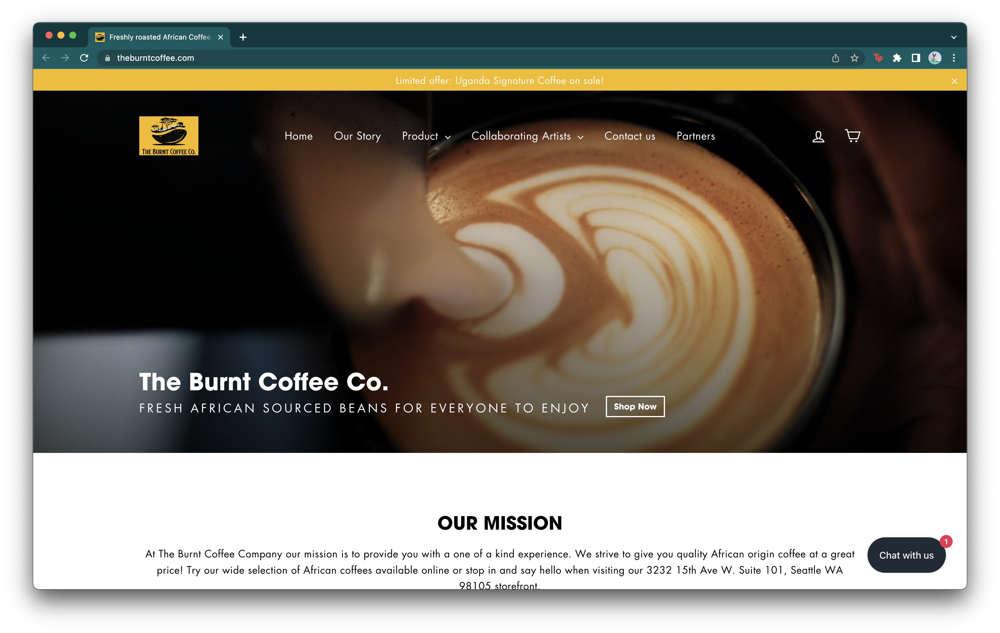

Final project proposal
Introduction
Reformative Roasts Co.
My company is a coffeeshop locally-based in the Seattle, Washington region. We specialize in sourcing the highest quality coffee beans and roasts all throughout the world and are passionate about exploring all the flavorful notes that can be found through a sip of coffee. Additionally, we work with a lot of our local bean farmers to produce freshly roasted coffee daily.
Target audience
Our customer base is made up of the fabulous locals of the Seattle (Ballard neighborhood) area! Seattle is a big city consisting of several neighborhoods and surrounded by plenty of populated urban and suburban populations.
We hope to use this website to build outreach outside of Ballard, Seattle, and hope to continue reaching communities outside of the state.
Comparative analysis
Caffé Umbria


The Burnt Coffee Co.
Herkimer Coffee


Website content
Home
Freshly roasted and organically sourced beans for everyone to enjoy
Hello Friends!
We specialize in ethically sourcing single origin coffee beans locally and all throughout the world. We are passionate about exploring all the flavorful notes that can be found through a sip of coffee. Additionally, we work to produce freshly roasted coffee daily.
About Us

Reformative Roasts Co. is a specialty coffee roaster and café based in Seattle. All our coffees come from sustainable women-owned farms and co-ops, and a percentage of every sale goes to supporting women's nonprofits around the world.
Coffee is a much-loved daily ritual around the world with global sales reaching into the billions. Yet women coffee producers have historically been overlooked and under compensated. Reports show that women often comprise up to 70 percent of the manual labor on coffee farms—planting, picking, processing, sorting—yet are far less represented in decision-making, trading, analysis, or business ownership.
This is why Reformative Roasts Co. works specifically with women producers to ensure they receive their fair share of the profits and that gender equality is respected at every stage of production. This empowerment leads to better outcomes for families and communities, and the beans consistently score higher in quality.
Roast Menu

-
La Morena
Our newest medium-dark roast by La Morena in the beautiful mountains of Huehuetenango, Guatemala.
- Tasting Notes : Maple, Pecan, Fruit, and Spice
- Produced by La Morena
- Altitude : 1,400 - 1,600 meters
- Washed
-
Boza
Our medium roasted, fair trade certified coffee grown by Rebuild Women's Hope in the Democratic Republic of the Congo.
- Tasting Notes : Strawberry Jam, Chocolate, Plum, Praline
- Produced by Rebuild Women's Hope in the Democratic Republic of the Congo
- Altitude : 1,480 - 2,000 meters
- Washed
-
Chiapas
Our lightly roasted, fair trade certified, organically grown coffee from the Sierra Madres in Chiapas, Mexico.
- Tasting Notes : Orange Blossom, Chocolate, Shortbread
- Produced by Federation de Sociedades Cooperativas Indigenas y Ecológicas de Chiapas (FESICH) - Café de Mujeres
- Altitude : 1,100 - 1,900 meters
- Washed
-
La Paz
Our medium-dark roast by Coordinadora de Mujeres Campesinas de La Paz in the beautiful mountains of Southwest Honduras.
- Tasting Notes : Butterscotch, Maple, Red Apple
- Produced by Coordinadora de Mujeres Campesinas de La Paz
- Altitude : 1,200 - 1,600 meters
- Washed
Contact Us
Reformative Roasts Co. can enhance your coffee experience by providing you with the most flavorful and fresh coffee experiences everday. Please contact us to find out more about our single origin coffee beans, our wholesale coffee program, and our unmatched community-oriented service.
We are open everyday from 8am-4pm; come by and say hi!
Reformative Roasts Co.
8620 16th Avenue South
Seattle, Washington 98108 USA
Phone us: 206.762.5300
E-mail us: info@reformativeroastsco.com